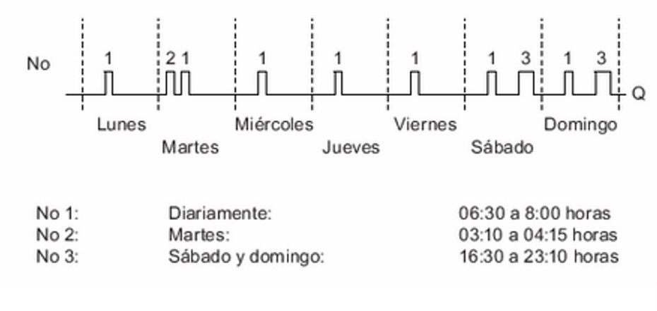

TEMPORIZADOR SEMANAL
Cuidado
El LOGO! debe disponer de un reloj interno en tiempo real para poder utilizar esta función especial
Descripción Breve
La salida se controla mediante una fecha de activación y desactivación configurable. Esta función soporta cualquier combinación posible de días de la semana.
| Conexión | Descripción |
|---|---|
| Parámetros No1,, No2, No3 | A través de los parámetros No1, No2, No3 se ajustan los momentos de conexión y desconexión de cada una de las levas ("Nocken" en alemán) del temporizador semanal. Para cada leva se especifican el día de la semana y la hora de conexión y desconexión. |
| Par | Indique si, al ser activado, el temporizador semanal debe funcionar durante un ciclo y desactivarse luego. El parámetro de impulso es válido para las tres levas |
| Salida Q | Q se activa cuando se acciona la leva configurada |
Cronograma (tres ejemplos prácticos)

Descripción de la función
Cada temporizador semanal está equipado con tres levas. Para cada una de estas puede configurarse una intervalo de tiempo. Mediante las levas se predeterminan los momentos de conexión y desconexión. En un determinado momento, el temporizador semanal activa la salida, siempre y cuando esta no esté activada aún.
El temporizador semanal desactiva la salida en el momento de desconexión si este se ha configurado, o bien al final del ciclo si se ha especificado una salida de impulso. Si se ha definido un mismo momento de conexión y desconexión para un temporizador semanal, pero en distintas levas, se produce un conflicto. En este caso, la leva 3 tiene prioridad sobre la leva 2 y esta, a su vez, sobre la leva 1.
El estado de conexión del temporizador semanal depende del estado de las tres levas No1, No2 y No3
Momentos de conexión
El momento de conexión puede estar comprendido entre las 00:00 h y las 23:59 h. El momento de conexión también puede configurarse como señal de impulso. El bloque de temporizador se activa a la hora indicada durante un ciclo. Luego se desactiva la salida. En este caso, el momento de desconexión está desactivado, puesto que no se necesita.
Particularidades acerca de la configuración
El diálogo de propiedades del bloque contiene una ficha para cada una de las tres levas. Allí puede ajustar los días de la semana para las levas. Además, en cada ficha es posible definir el momento de conexión y desconexión de cada leva (en horas y minutos). Por tanto, el ciclo de conmutación mínimo es un minuto. En cada ficha también puede especificarse una salida de impulso para la leva.
Los momentos de conexión y desconexión pueden desactivarse individualmente, lo que permite alcanzar ciclos de conmutacion de más de un día. Por ejemplo, puede conectar el temporizador con la leva 1 el lunes a las 7:00 h y desconectarlo con la leva 2 el miércoles a las 13:07 h y desactivar la hora de conexión de la leva 2.
Respaldo del reloj en tiempo real
El reloj interno en tiempo real de LOGO! sigue funcionando incluso si se produce un corte de alimentación. El tiempo de respaldo depende de la temperatura ambiente y es típicamente de 20 días (para los dispositivos LOGO! 0BA7) o de 80 horas (para los dispositivos LOGO! 0BA6) a una temperatura ambiente de 25 C.
Los dispositivos LOGO! 0BA6 o posteriores soportan la opción de una tarjeta de batería o de memoria/batería combinada. Estas tarjetas respaldan el reloj en tiempo real durante varios años
EJERCICIOS
EJERCICIO 1
- Parametriza una alarma para fines de semana, esta suena a las 5 se la mañana y a la 1 para cambios de turno en una empresa.
- Esta alarma suena por 3 minutos para avisar el cambio.
- Cuenta con un faro que enciende cuando suena.
EJERCICIO 2
- Una empresa tiene un timbre de salida a descansar, este timbre funciona toda la semana, los descansos son de 8:30-9:00, de 11:30-12:00 y de 4:30-5:00.
- La alarma suena por 1 minuto para avisar la salida.
- Cuenta con un faro que enciende junto con la alarma para visualizar que empieza el descanso.
SOLUCIÓN DE LOS EJERCICIOS
Temporizador semanal

Solución del ejercicio 1

Solución del ejercicio 2